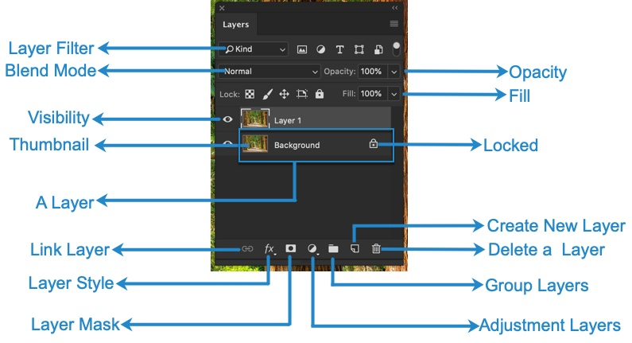
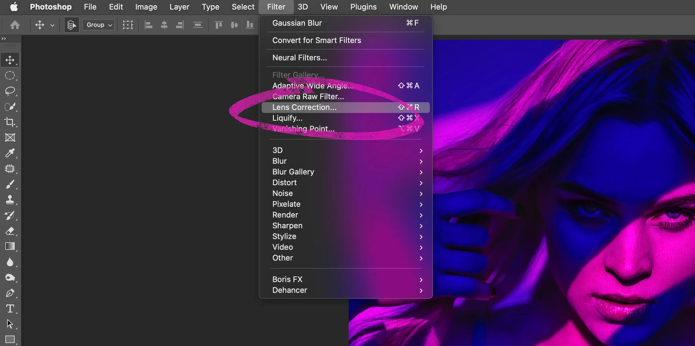

PHOTOSHOP EDITING FEATURES
| Sr No. |
Feature Name |
Description |
Image |
| 1 |
Layers
| Sub-Feature |
Description |
| Adjustment Layers |
Non-destructive editing for color and lighting corrections. |
| Smart Objects |
Reusable and scalable layers with no quality loss. |
| Blending Modes |
Combine layers with creative effects (e.g., Multiply, Overlay). |
|
Allows stacking multiple elements (images, text, adjustments) for detailed editing. |
 |
| 2 |
Selection Tools
| Tool |
Description |
| Lasso Tool |
Freehand selection of areas in an image. |
| Magic Wand |
Automatically selects areas with similar colors. |
| Quick Selection |
Drag over an area to make precise selections. |
| Pen Tool |
Create precise paths and selections with anchor points. |
|
Tools like the Lasso, Magic Wand, and Quick Selection for isolating parts of an image. |
 |
| 3 |
Brush Tool
| Brush Type |
Purpose |
| Soft Brush |
Creates smooth, soft edges for blending effects. |
| Hard Brush |
Creates sharp edges for precise painting. |
| Custom Brushes |
Design and save brushes for specific artistic effects. |
|
Customizable brushes for painting, retouching, or adding creative effects. |
 |
| 4 |
Cloning and Healing
| Tool |
Purpose |
| Clone Stamp |
Duplicates parts of an image for retouching. |
| Healing Brush |
Removes imperfections while blending with surroundings. |
| Spot Healing Brush |
Quickly fixes small imperfections in one click. |
|
Clone Stamp and Healing Brush to remove imperfections or duplicate parts of an image. |
 |
| 5 |
Filters
| Filter |
Use |
| Gaussian Blur |
Creates a smooth blurring effect for artistic purposes. |
| Sharpen |
Improves the clarity of image details. |
| Liquify |
Distort parts of an image for creative effects. |
| Noise Reduction |
Reduces graininess in photos. |
|
Apply artistic effects or corrections using filters like Gaussian Blur, Sharpen, etc. |
 |
| 6 |
Typography
| Feature |
Purpose |
| Text Effects |
Add shadows, strokes, and gradients to text. |
| Font Styles |
Choose from thousands of fonts for creative projects. |
| Warp Text |
Create curved or distorted text effects. |
|
Add and manipulate text with advanced formatting options. |
 |